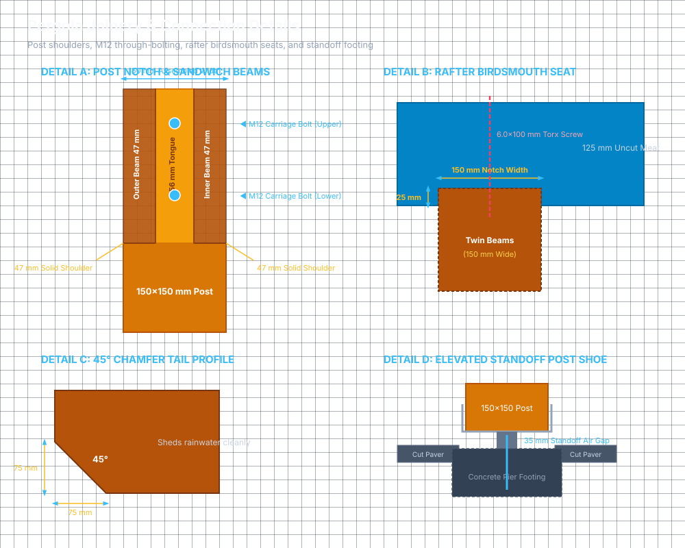

04 — Joinery & Connection Details

This guide details the structural joinery cuts, fastener configurations, and step-by-step techniques to create high-strength, professional connections using your tools (mitre saw, router, handheld circular saw, and Bosch GSR 12V-35 FC drill/driver).
1. Post Top Shoulder (Sandwich Beam Joint)
1.1 Assembly Geometry
The two 47 mm × 225 mm main support beams sandwich the top of each 150 mm × 150 mm post. Rather than relying on bolt shear strength alone, the weight rests directly on solid timber shoulders:
- Post Thickness: 150 mm
- Shoulder Cut Depth: 47 mm on the outer face, 47 mm on the inner face
- Central Tongue Width: 150 − (2 × 47) = 56 mm
- Shoulder Height: Exactly 225 mm (matching beam depth)
- Total Sandwich Thickness: 47 mm (Outer Beam) + 56 mm (Tongue) + 47 mm (Inner Beam) = 150 mm (The assembled beam sandwich is completely flush with the sides of the post!)
┌─────────┬──────────────┬─────────┐
│ Beam │ Post Tongue │ Beam │
│ (47 mm) │ (56 mm) │ (47 mm) │
│ │ │ │
│ [o] M12 Coach Bolt │ (O) Hex Nut & Washer
│ │ │ │
│ [o] M12 Coach Bolt │ (O) Hex Nut & Washer
│ │ │ │
├─────────┴──────────────┴─────────┤
│ ◄────── 47 mm ──────► │ │ ◄── Solid 47 mm Bearing Shoulder
│ │
│ 150x150 mm Post │
│ │
1.2 Cutting Technique (Circular Saw + Router / Chisel)
- Marking: Using a speed square, scribe lines at 225 mm down from the post top on opposite faces. Mark 47 mm depth lines on the top and side edges.
- Saw Kerfing: Set your circular saw blade depth to exactly 47 mm. Make closely spaced parallel cuts (every 10–15 mm) across the 225 mm waste area on both faces.
- Chiseling: Knock out the waste wood fingers with a sharp 25 mm (1″) wood chisel.
- Router Clean-up: Set your router with a straight mortising bit (or flush-trim bit with a scrap-wood guide clamped to the post) set to 47 mm depth. Run the router across the shoulder to create a dead-flat, glass-smooth bearing surface.
- Preserver: Generously saturate the exposed end-grain shoulders and tongue with Ronseal End Grain Preserver; allow to soak in for 15 minutes and repeat.
2. Main Beam Bolting Pattern (M12 Carriage Bolts)
2.1 Fastener Specification
- Bolt: M12 × 160 mm Hot-Dip Galvanised / Stainless Carriage / Coach Bolt (round smooth dome head on the outside, square neck, threaded shaft).
- Washer: M12 Form G Large Washer (penny washer) on the inside face.
- Nut: M12 Hex Nut (torqued with hand ratchet / socket wrench).
- Quantity per Corner: 4 bolts per post (arranged in a 2×2 staggered grid) = 16 bolts total.
◄───────── 150 mm Post Width ─────────►
┌───────────────────────────────────────┐ ▲
│ 50 mm 50 mm │ │
│ │ │ │ │ 50 mm
│ ● Bolt 1 │ │
│ ● Bolt 2 │ │ 65 mm 225 mm Beam Depth
│ ● Bolt 3 │ │ 65 mm
│ ● Bolt 4 │ │ 45 mm
│ │ ▼
├───────────────────────────────────────┤
2.2 Drilling with the Bosch GSR 12V-35 FC
- Clamp both 47 mm beams securely into the post notches using two heavy-duty F-clamps or quick-grip clamps.
- Fit a 13 mm diameter wood auger bit into your Bosch drill.
- Set the drill to Gear 1 (Low Speed / High Torque).
- Drill steadily from the exterior face through all three layers (47 mm beam + 56 mm tongue + 47 mm beam = 150 mm total). The auger bit will pull itself through without straining the 12V motor. Clear wood shavings frequently.
- Tap each M12 coach bolt through with a rubber mallet until the square neck bites firmly into the timber.
- Slip the large penny washer and hex nut onto the inside. Hand-tighten with a 19 mm socket on a 1/2″ or 3/8″ ratchet wrench. The bolt head will draw flush into the exterior wood face with tremendous clamping pressure.
3. Rafter Birdsmouth Notch Joinery
Each of the 10 rafters rests on top of the front and back beam assemblies. To prevent twisting and lock the frame square, each rafter features two flat seat notches:
- Notch Width: 150 mm (exact match for the twin-beam sandwich width)
- Notch Depth: 25 mm (leaving 150 − 25 = 125 mm of solid timber meat above the beam)
- Notch Spacing: Exactly 3000 mm on-centre between front and back notches.
◄────────────────────────── 150 mm Wide Notch ──────────────────────────►
┌────────────────────────────────────────────────────────────────────────┐
│ Rafter (47x150 mm) │
│ │
│ 125 mm Uncut Meat │
│ │
Screw 1 ──► \ / ◄── Screw 2
(45° Angle) \ / (45° Angle)
├───────\──────────────┐ ┌──────────────/───────────────┤
│ 25 mm \ │ │ / │
└─────────▼────────────┤ ├────────────▼─────────────────┘
│ │ 56 mm Air Gap │ │
│ Outer 47 mm Beam │ (or Tongue) │ Inner 47 mm Beam │
│ (225 mm Deep) │ │ (225 mm Deep) │
3.1 Batch-Cutting & Fastening Rafters
- Master Template: Cut the first rafter with extreme care. Check its fit across your raised beams. Mark it as "MASTER TEMPLATE".
- Transfer: Trace the notches and end chamfers from the master template onto the remaining 9 rafters.
- Cutting with Mitre Saw / Circular Saw:
- Clamp 3 or 4 rafters side-by-side.
- Set circular saw depth to 25 mm.
- Cut multiple kerfs across the 150 mm marked zone.
- Knock out with a chisel and clean flat with your router or hand rasp.
- Fastening via 45° Skew-Screwing (Toenailing):
- Why 100 mm screws cannot be driven vertically from above: The rafter has 125 mm of uncut timber meat above the 25 mm seat notch. A 100 mm screw driven vertically from the top face would stop 25 mm inside the rafter without ever reaching the beam below! (Driving vertically straight down would require 180–200 mm screws, and between posts would risk hitting the 56 mm open space between the sandwich beams).
- The Correct Technique: Drive two 6.0 mm × 100 mm Torx structural screws
per seat at a 45° downward angle (toenailed):
- Screw 1: Drive through the outer rafter flank starting ~35–40 mm above the notch seat, angled down into the outer 47 mm beam.
- Screw 2: Drive through the inner rafter flank angled down into the inner 47 mm beam.
- Pre-drill 4.5 mm pilot holes at 45° with your Bosch GSR 12V drill to ensure the screws pull the rafter down tight against both beam boards without splitting.
4. 45° Corner Knee Braces
Knee braces provide diagonal triangulation against wind gusts and racking:
- Dimensions: 100 mm × 100 mm C24 timber.
- Mitre Angles: Cut at 45° on your sliding compound mitre saw.
- Leg Distances: Scribed at 450 mm down from post top, and 450 mm inward along beam/rafter.
- Fastening:
- Pre-drill a 15 mm deep counterbore using a 20 mm spade/forstner bit on the outer face of the brace (to recess the screw head).
- Drill a 5.0 mm pilot hole with your Bosch drill.
- Drive a 6.0 mm × 140 mm Torx structural screw in Gear 1 through each end into the post and beam.
5. Post Base & Concrete Pier Connection Details
Two proven bracket options are supported for mounting the 150 mm × 150 mm corner posts to the concrete piers:
5.1 Option 1: 150 mm Heavy-Duty Galvanised Bolt-Down Shoe (Box Collar — Recommended)
This is the most straightforward, rigid method for DIY installation:
- Bracket: Fabricated heavy-duty steel box shoe with 150 mm × 150 mm internal clearance (e.g. Securall Fastenings, Huws Gray, Speedy Fixings).
- Anchorage to Pier:
- Base plate features 4 corner fixing holes.
- Drilled with 12 mm masonry bit into the concrete pier; secured using four M12 × 100 mm or 120 mm through-bolts (wedge anchors) torqued to 50 Nm.
- Post Connection:
- Post drops straight into the square steel collar, which holds the post upright during temporary bracing and plumbing.
- Fastened through side collar holes using four M8 × 50 mm coach screws or heavy-duty timber connector screws (pre-drilled with a 5.0 mm pilot bit).
- Moisture & Drainage Protocol:
- Insert a 5 mm composite/plastic packer or thick stainless washer in the bottom of the shoe under the centre of the post end-grain.
- Ensures rainwater drains out of the shoe's pre-drilled drain weep holes and prevents the post from sitting in standing water.
5.2 Option 2: Simpson Strong-Tie APB100/150 (Adjustable Elevated Standoff Base)
An architectural solution that elevates the timber post entirely clear of the patio:
- Bracket: Simpson Strong-Tie APB100/150 comprising a bottom mounting plate, an M20/M24 central threaded adjustment screw, and a top post-bearing plate.
- Adjustable Standoff:
- Provides 100 mm to 150 mm of height adjustment.
- Allows precision leveling of all 4 posts individually across uneven patio slopes even after posts are erected.
- Anchorage to Pier:
- Centrally anchored to the concrete pier with one M12 or M16 through-bolt or chemical anchor stud.
- Post Connection:
- Top bearing plate fixed to the bottom face of the 150×150 mm post using four heavy structural screws before standing the post upright.
- Moisture Protection:
- Complete physical separation: the post floats 100 mm+ above patio pavers and concrete, offering the highest possible protection against ground moisture and splashback.